Урок 4.2
Бесплатные способы продвижения
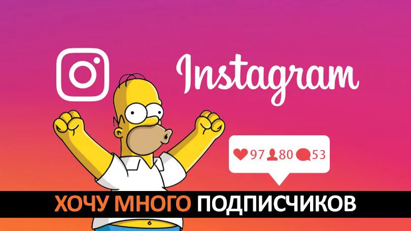
Как получить подписчиков в Инстаграм: первая 1000
Мы сразу исключаем вариант каких-либо накруток подписчиков и покупки чужого аккаунта с аудиторией. Это путь в никуда. Большое количество ботов или нецелевых подписчиков – это только цифра, которая тешит эго, НЕ приводит клиентов, а Instagram еще и уменьшает охваты.
Начнем с базовых и понятных действий, которые помогут не только получить первых подписчиков в Instagram, но и регулярно будут увеличивать аудиторию.
-
Совет 1: используйте свои контакты
Когда вы создадите аккаунт, зайдите в настройки (иконка «гамбургер» в правом, верхнем углу, затем в самом низу справа – шестеренка «Настройки»), в раздел «Для подписок». Там вы увидите раздел «Контакты» и отдельные социальные сети, которые подключили.
Instagram считает все ваши контакты, друзей на Facebook, в ВК и т.д. Вам нужно лишь в каждом разделе нажать «Подписаться на всех». Всего несколько кликов, и вы будете подписаны на всех знакомых. Они, в свою очередь, получат уведомление об этом и смогут подписаться на вас.
Примечание: ключевую роль в этом приеме играет аудитория из ваших контактов и социальных сетей. Если вы знаете, что среди знакомых не так много целевой аудитории для конкретно этого проекта, лучше подписываться вручную, а не по кнопке «Подписаться на всех».
-
Совет 2: поставьте ссылки в других соцсетях
Для личного аккаунта хорошо сработает связка с личной страницей на Facebook в ВК ОДНОКЛАСНИКИ. Вы можете получить подписчиков в Инстаграм за счет ссылки в описании.
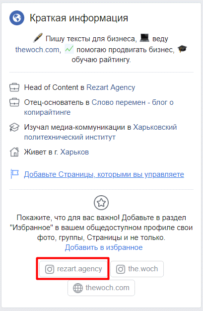
Для Фейсбук, зайдите в раздел «Информация», потом «Основная и контактная информация». Добавьте ссылку на свой аккаунт Instagram. Достаточно выбрать в списке социальных сетей Инстаграм и указать только логин (без @), просто «rezart.agency»
-
Совет 3: ссылки везде, где есть контакт с аудиторией
Про социальные сети мы уже говорили, но есть еще несколько «злачных мест». Общаетесь часто в Telegram? Сделайте в кратком описании ссылку на личный Instagram.
В корпоративной и личной почте можно поставить ссылку на аккаунт в подписи к письмам. Разумеется, не забудьте о ссылке на сайте. Если Instagram принципиально важен, можно даже вывести блок с последними постами, чтобы вовлечь пользователей и мотивировать их подписаться.

-
Совет 4: расскажите о себе миру
Всему миру, конечно, рано еще, но вот своим клиентам – легко. Сделайте рассылку по почте или в мессенджере, чтобы клиенты знали, что у вас теперь есть Instagram.
Но вам же нужно получить подписчиков, а не надоедать клиентам. Поэтому сразу в сообщении продумайте какую-то пользу, бонус, что-то интересное. Напишите, например, что теперь в Instagram будут оригинальные подборки товаров, особенные предложения, и вообще – для подписчиков страницы дополнительная скидка 5%.
-
Совет 5: друзья и друзья друзей – добрый PR
Посмотрите на аккаунты своих друзей, выпишите всех, у кого больше 1000 подписчиков. Напишите им с просьбой порекомендовать вашу страничку. Главное, не просто отметить профиль, а призывать аудиторию: « Подпишитесь – получайте вот такие крутые, интересные штуки, ЧЕК ЛИСТ , ГАЙД, ИНСТРУКЦИЮ».
Если у ваших знакомых нет нужно аудитории, найдите похожие странички (не прямые конкуренты, но смежные сферы). Например, вы занимаетесь детской фотографией, вас может порекомендовать бренд, которые делает детские игрушки, организовывает детские праздники или профиль местной «развивашки» для карапузов.
С личным брендом немного проще, люди охотнее доверяют другим людям, да и посмотреть на чужую жизнь – то еще развлечение. Но здесь не стоит питать иллюзий, что вам подойдет для взаимной рекламы любой профиль. Относитесь особенно осторожно к тому, что размещаете в своем профиле, чтобы в самом начале не отпугнуть аудиторию обилием рекламы.
-
Совет 6: мотивируйте рассказывать о вас
Самый классный вопрос – как получить подписчиков в Instagram, ничего не делая. Например, сделать так, чтобы ваши подписчики сами рассказывали о вашем профиле и агитировали друзей подписываться. Есть несколько способов.
-
Свой конкурс
Простой, понятный, проверенный временем механизм в социальных сетях. Нужно, чтобы участник был подписан на вашу страницу, разместил у себя в профиле публикацию с отметкой вашего аккаунта. Затем вы разыгрываете подарок.
Примечание: разыгрывайте вашу продукцию или услуги. Если вы выберете абстрактный подарок (у вас детские игрушки, а разыгрываете iPhone), участие примут все-все-все, а не только целевая аудитория.
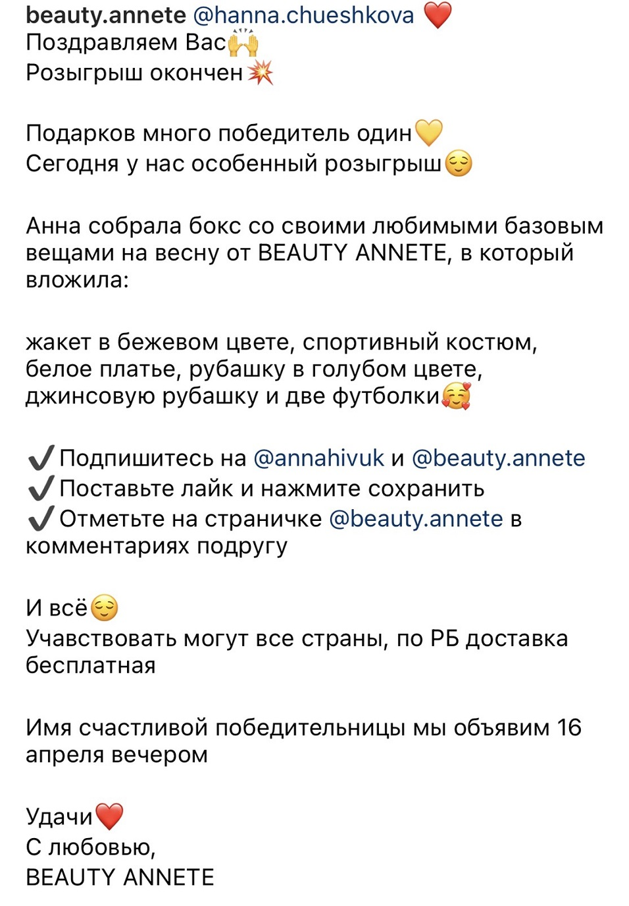
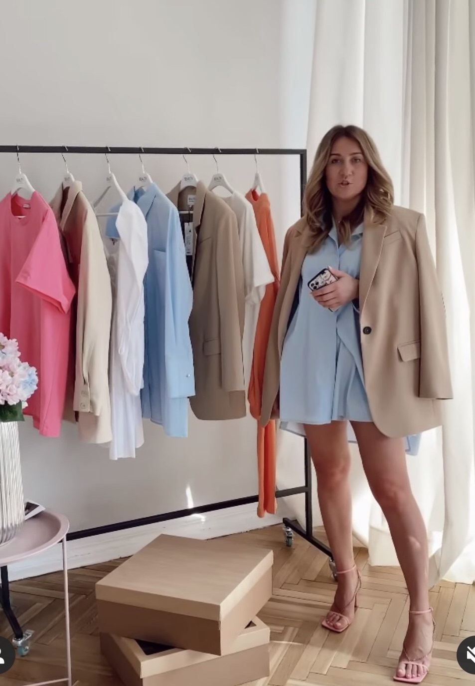
Пример точечного, целевого конкурса с призом в качестве своего продукта.
-
WOW-эффект
Придумайте какую-либо классную фишку, неожиданную приятность для ваших клиентов. Это должно быть что-то доброе, интересное, забавное, чтобы люди сами захотели об этом рассказать. Например, можно добавлять подарок к каждому заказу или добавлять к посылке открытку с пожеланиями, написанными от руки.
-
Пользовательский контент
Размещайте фотографии и посты клиентов в своем профиле. Например, клиент прислал вам фото, как ему нравится полученная сумка, поблагодарил за доставку. Вы размещаете пост с этой фотографией, отмечаете пользователя. Что он делает? Ему нравится внимание (всем нравится ведь!), он делает себе репост или сам дублирует фото, отмечая ваш профиль.
Так, например, на странице издательства МИФ часто публикуются фото и отзывы на книги от самих читателей, подписчиков, покупателей книг.
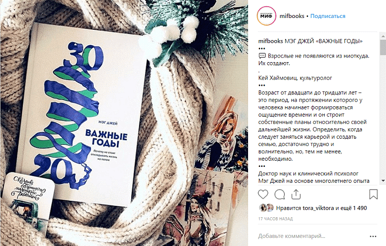
Как продвигать аккаунт и усилить привлечение подписчиков?
Следуйте советам выше, используйте даже исключительно бесплатные или недорогие методы, и вы получите свою первую 1000 подписчиков. Это гораздо проще, чем кажется.
Но что делать дальше, чтобы ускорить процесс, получить больше подписчиков, удерживать аудиторию и делать её лояльной?
-
Используйте Stories. Оптимальный вариант 1-7 историй в день. Можно делать это не ежедневно, но системно. Последние исследования показывают, что и бренды, и личные аккаунты так получают больше охватов, лучше вовлекают аудиторию.
-
Не старайтесь быть идеальными. Живые фото и видео на смартфон, естественная среда, нормальное освещение – всё это делает вас ближе к аудитории, так люди чувствуют, что вы – такие же, как и они.
-
Снимайте видео и выходите в прямой эфир. Круто, если вы придумаете регулярную рубрику или превратите её в целый сериал, за которым интересно наблюдать.
-
Будьте системными – составьте контент-план, включайте в него актуальные вопросы и темы, которые вам предлагают подписчики. Но не пытайтесь нравится всем и сразу, вам нужно оставаться верными своим ценностям и взглядам.
-
Показывайте личность. Даже если вы развиваете страницу бренда, за ним стоят реальные люди. Показывайте себя, свою команду, клиентов. Такие публикации не просто более органично выглядят, они получают больше лайков, комментариев, выше охваты, они позволяют получить больше новых подписчиков.
-
Вовлекайте аудиторию: используйте голосования, опросы, стикеры. Можете периодически устраивать разные активности: вопросы и ответы в комментариях, интерактивные истории и онлайн-игры в постах.
-
Не стесняйтесь с призывами. Кажется, что это «выпрашивание» лайков, но практика показывает обратное. Элементарный призыв «Ставьте лайк, сохраняйте пост» или «Расскажите, как вам такая идея?» повышают вовлеченность аудитории и охват.
-
Анализируйте встроенную статистику (доступна бизнес-профилям), чтобы понимать, какие посты получают выше охват, лучше вовлекают людей. Это поможет скорректировать контент-план и привлечь больше новых подписчиков.
Чтобы регулярно получать подписчиков в Инстаграм, можно использовать еще Массфоловинг и Масслайкинг, НО НЕ ЧЕРЕЗ ПРОГРАММЫ , сейчас это инста распознает и блочит , только органические подписки и лайки ( я сделала видео урок о том, как это правильно сделать)
Бартер с блогерами
-
Плюсы
Способов бартера много. Блогер может порекомендовать вас в своем посте, а вы репостните этот пост в сторис. Если вы СМИ или продаете релевантный теме продукт – блогер может стать вашим экспертом, писать для вас посты и говорить об этом на своей странице. Получится взаимный обмен подписчиками + бесплатный контент. Охотно на это идут маленькие блогеры. Или крупные, если вы – популярный бренд.
-
Минусы
Надо тщательно проверять репутацию блогера. Не все соглашаются, приходится тратить много времени на поиск. Если с платными предложениями косячат, то здесь и подавно. Следить за исполнением договоренности надо еще тщательнее.
Взаимный пиар с компаниями
-
Плюсы
Возможность привлечь релевантную аудиторию. Например, риэлторская компания может сотрудничать с дизайнерами интерьера. Делается по тому же принципу, что и с блогерами.
-
Минусы
Долго и сложно искать, договариваться. У компании может быть свое видение бартерной рекламы и куча условий. Надо следить за исполнением договоренностей и проверять репутацию. Если компания начнет лажать, поднимется уровень негатива в интернете – это коснется и вас тоже.
Пользовательский контент и брендированные хэштеги
-
Плюсы
Вы можете использовать фото с клиентских каналов у себя – это мотивирует подписчиков тоже выкладывать селфи с вашим продуктом. Это бесплатно и выгодно. Люди пользуются вашим продуктом, делают селфи и ставят хэштеги в публикации – подписчики видят, им нравится, подписываются на ваш канал.
Например,хэштэг #starbucks используется покупателями, которые любят кофе. Тренд на фотографии еды и мест отдыха сыграл на руку сети кофеен.
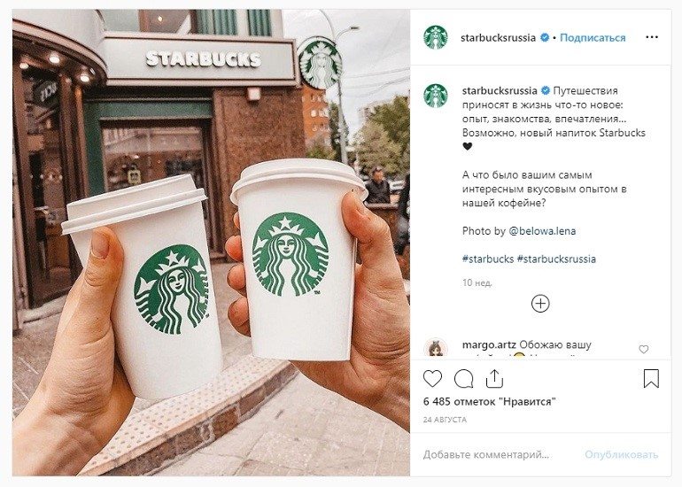
-
Минусы
Подходит не всем. Сложным услугам, например, будет трудно придумать варианты пользовательского контента и при этом не нарушить концепцию дизайна канала. Но есть выход – отзывы от клиентов можно публиковать в сторис. Еще брендированный хэштег может собрать негатив от недовольных клиентов.
Виральный контент
-
Плюсы
Это контент, который будут читать, смотреть, слушать, делиться, комментировать и рекомендовать. Завируситься может любой контент, даже если на него не было ставок. Хорошо вирусятся видео, подборки, карточки-инструкции, какие-то важные новости и посты на острые темы. Виральный контент привлекает новых подписчиков и повышает интерес к блогу.
Например, Максим Ильяхов делает полезные текстовые карточки в своем блоге – такие вещи мгновенно разлетаются по закладкам и директам.
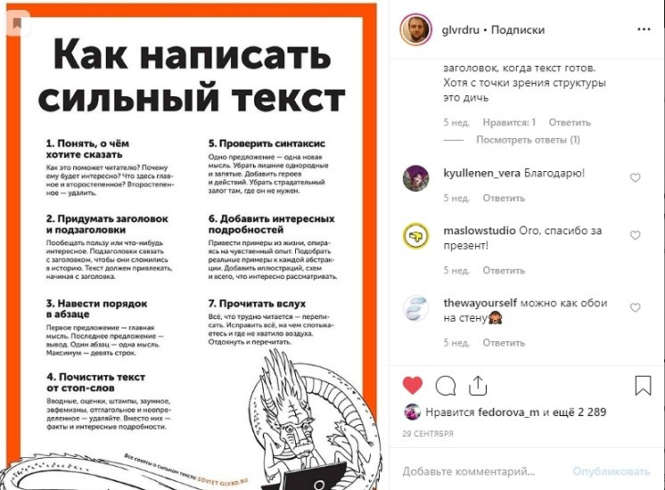
-
Минусы
Постоянно надо придумывать что-то новое. Иногда на реализацию приходится вкладывать дополнительные деньги. И все равно не факт, что завирусится. Стараться надо, но сильно обнадеживать себя не стоит.
Тематические хэштеги
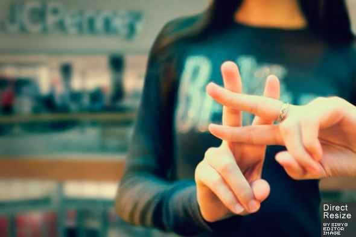
-
Плюсы
По хэштегам ваша публикация может попасть в «топ» и ее увидит много заинтересованных в теме людей. Даже слабый пост увидят, пока он будет висеть в «недавних». Значит, есть вероятность получить новых бесплатных подписчиков. Тематические хэштеги похожи на ключевые слова, по ним пользователи ищут нужную тему. Используйте смесь злободневных хэштегов с узкими и трендовыми – это расширит круг читателей.
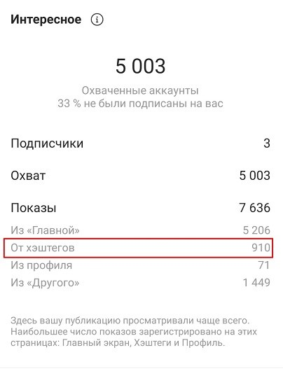
-
Минусы
Постоянно приходится искать новые хэштеги. И, скорее всего, новых людей будет очень мало. Хорошо, если их количество будет покрывать отток старых подписчиков.
Геометки
-
Плюсы
Бесплатные подписчики с нужной геолокацией. Особенно вкатит если вы работаете с определенным районом или хотите перехватить людей из нужного места – рестораны, магазины, и т. д. Например, вы описываете впечатления о новом фильме – ставьте в геометке адрес кинотеатра.
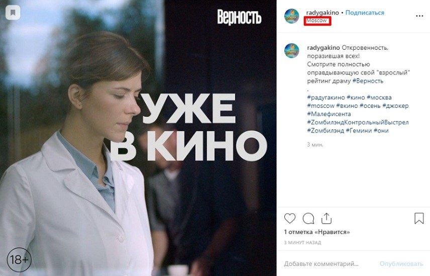
-
Минусы
По геометкам смотрят очень мало людей. Много подписчиков таким образом не соберешь. Зато бесплатно.
Комментирование постов ЦА
-
Плюсы
Привлечет новых подписчиков и повысит доверие к бренду. В релевантном по теме каналу можно давать экспертные ответы подписчикам. Например, если вы специалист в какой-то области – дайте совет под постом, дополните его, осторожно поправьте, если нужно, или ответьте на вопрос.
-
Минусы
Придется долго искать людей, подходящие посты и отвечать – это тоже надо уметь. К тому же это может бесить людей. Вторжение под ником бренда в личный блог человека может привести не к той реакции, которую вы ожидали.
Используйте Хештеги
Инстаграм — одна из немногих социальных сетей, где хештеги пока еще работают.
Составьте контент-план, определите рубрики для публикаций, сделайте подборки релевантных хештегов и используйте их при публикациях:
-
на одну публикацию используйте не более 10-15 хештегов;
-
включайте в список несколько высоко-частотных, средне и низко-частотых хеш-тегов; (не берите более 10 к публикаций, 10 и меньше)
-
для развивающихся аккаунтов выше вероятность быть замеченными по средне и низко-частотным хештегам;
-
подбирая теги не фантазируйте и не изобретайте велосипед, смотрите статистку использования хештегов, делайте упор на теги, которые использует ваша целевая аудитория, популярные среди целевой аудитории блогеры и тематические паблики;
-
со временем можно редактировать публикации и убирать из них теги, переставшие быть актуальными и оставлять те, которые помогают каталогизировать ваши посты.
Лайк таймы
Как правильно участвовать к этом «мероприятии» ? Начнем с того, что если у вас мало подписчиков вам нет смысла проводить такие активности в вашем профиле, отдача будет малая.
А как быть?
Ищем блогера , крупного 100к и выше с похожей на вашу ЦА, читаем его посты , убеждаясь в том, что он проводит лайк таймы , ставим уведомления о него публикациях и стараемся быть первыми среди комментирующих, тогда вас увидеть много людей и соответственно у вас есть шансы , что с вами кто-то останется после таких движух, если вы до этого сделали классный визуал.
Обзоры магазинов
Делайте обзоры магазинов , популярных заведений, книжных магазинов , товаров, продуктов, инфопродуктов. Если вы сделаете необычный обзор , шуточный , эмоциональный.
Владельцы , чаще всего сделают репост вас к себе в сторис , а люди, в свою очередь обязательно зайдут к вам , если обзор классный. А уж если у вас всё здорово оформлено, они останутся с вами.
Не выкладывайте обзоры в выходной день, т.к. смм в компаниях в выходные дни не работают (учитывайте этот момент).
Совместные прямые эфиры
Обмен подписчиками в прямом эфире, этот метод работает если вы заранее анонсируете о эфире и тема очень интересная . Продумаете эксперта для эфира у которого в подписчиках , ваша ЦА . Если эфир пройдет интересно и вы понравитесь людям , они перейдут в ваш профиль и если у вас там все красиво, они обязательно с вами останутся.
Привлечь аудиторию из ТикТок
ТикТок — отличная площадка, откуда можно переманивать к себе пользователей. Одно вирусное видео может принести тысячи новых подписчиков. Если оборвать видео на самом интересном моменте и предложить пользователям досмотреть его в Инстаграм, то можно заполучить массу «легких» подписчиков.
Отличный пример от пользователя Austin. Блогер загрузил видео, где он кидает Mentos в ванную с колой. Видео обрывается именно в тот момент, когда должен быть эффектный взрыв, а в комментариях написано, что продолжение можно посмотреть в Инстаграм. Видео набрало более полутора миллиона просмотров:
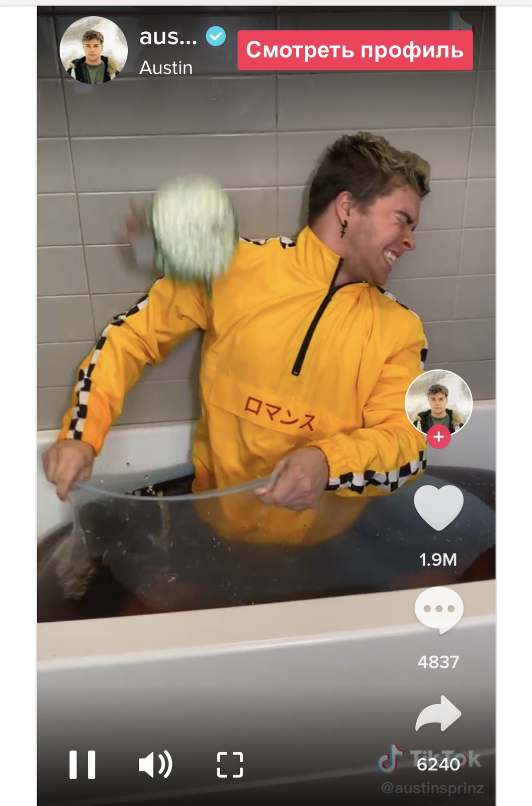
P.S: В каждой нише своя специфика продвижения и что-то из перечисленных способов может вам не подойти. Так, например, в сети постоянно вспыхивают споры о том, что эффективнее – блогеры или таргет. Ответ: и то, и то. Зависит от продукта, который вы продаете, и аудитории. Пройдя какой путь вы сами будете понимать , ага - это хорошо зашло, а вот это - не очень.
ПРОБУЙТЕ - это главный посыл!!!